Charlottenburg · Intérieur, micro-living, mai 2026
Modern Berlin Micro-Living Apartment

Le contexte. Un studio de 34,46 m² dans un immeuble résidentiel modernisé de Charlottenburg, à deux pas du Landwehrkanal, de la Spree et de la TU Berlin. Le client, Jonas Keller, étudiant en architecture, en a fait son espace pour vivre, travailler et créer. L'entrée se fait directement dans la pièce principale, sans couloir ni sas tampon, ce qui pose d'emblée la question de la lecture des usages.
L'intention. Une direction artistique « Warm Minimal » : matières naturelles, tons clairs, lignes nettes. L'objectif n'est pas une transformation structurelle, les murs périphériques sont porteurs et ne peuvent pas être touchés, mais une relecture spatiale : fluidifier les usages et améliorer la perception de l'espace dans une surface contrainte.
La stratégie. Optimiser chaque m² disponible, multiplier le mobilier sur-mesure discret et les rangements intégrés, clarifier trois zones dans un même volume : vie, travail, repos. La pièce principale de 23,34 m² concentre ces usages, tandis que la zone de transition (4,16 m² et 2,03 m²) et la salle de bain de 4,93 m² restent des espaces de service bien identifiés. L'unique fenêtre, orientée nord-est, offre une belle lumière de matin qu'il faut diffuser avec soin vers les zones les plus reculées, couloir et cuisine.
Le résultat. Une rénovation légère (budget 15 000 à 30 000 €) portée sur l'optimisation de la surface, le mobilier sur-mesure, la reprise des sols et des peintures, et le travail de la lumière artificielle, plutôt que sur le gros œuvre. Un studio qui gagne en fluidité d'usage sans gagner un mètre carré supplémentaire.
Le plan

Moodboard
Une palette Warm Minimal construite autour de tons clairs et naturels, ponctuée d'une touche de jaune pastel et de vert de brume pour réchauffer le blanc cassé dominant.
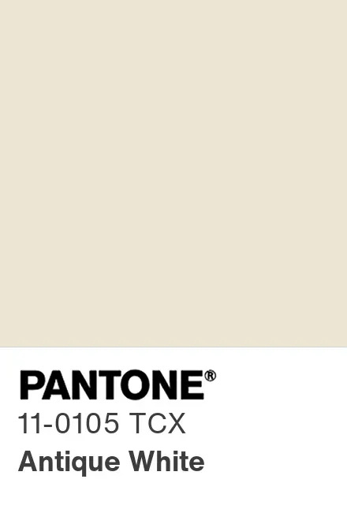
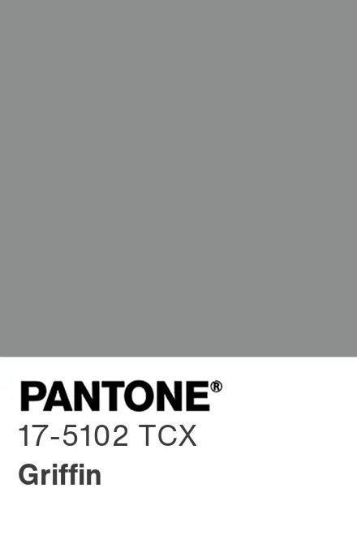
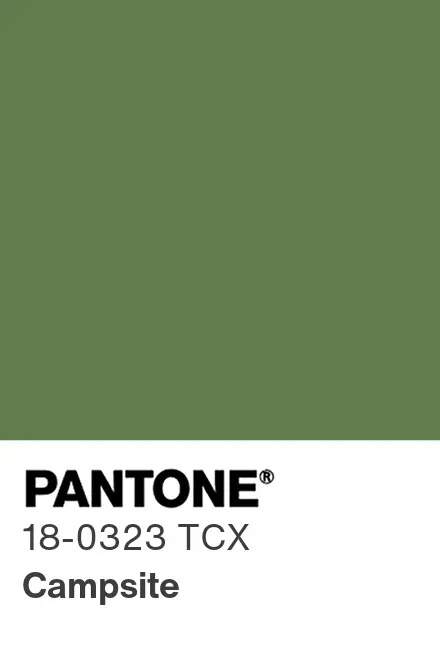
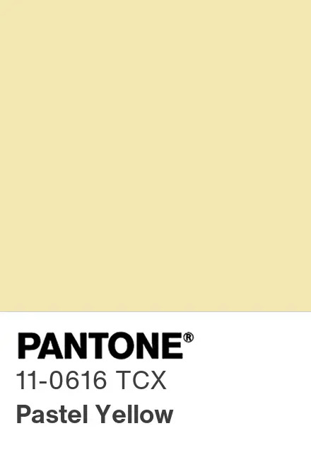
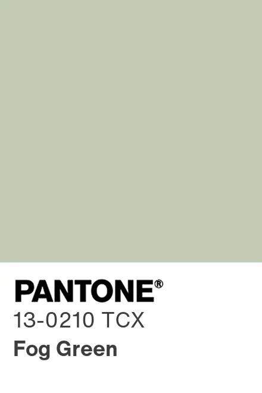
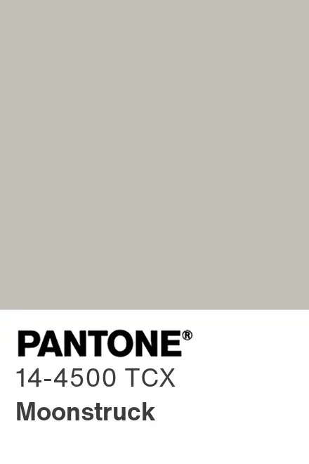
Les références et matières qui ont nourri le projet : mobilier gain de place, ambiances de travail, bois, enduits et détails de finition.
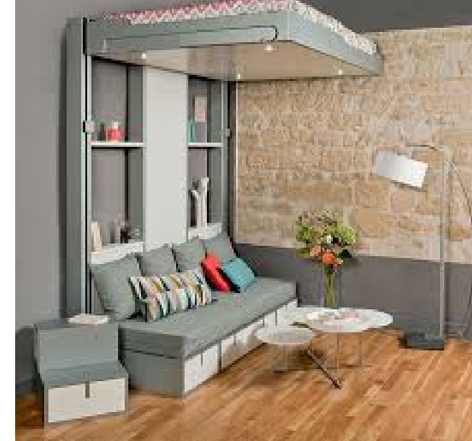
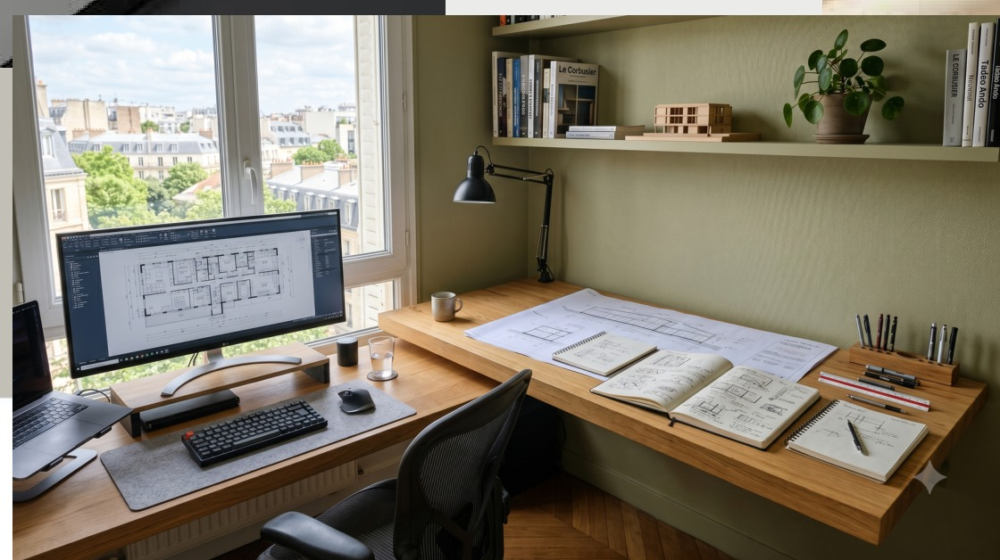
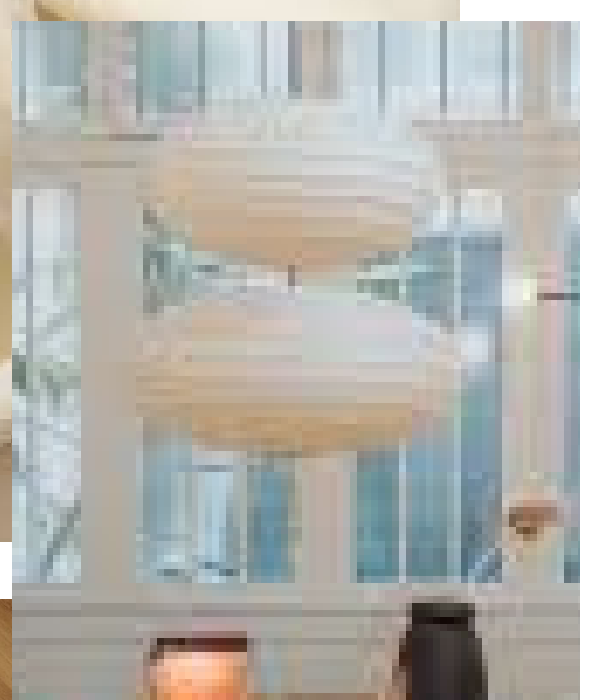
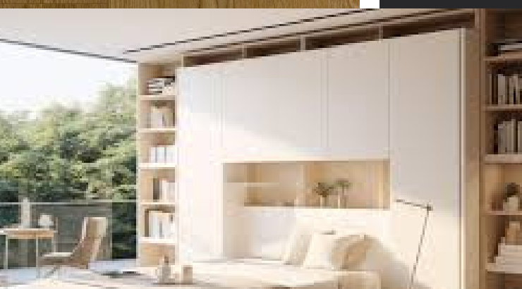
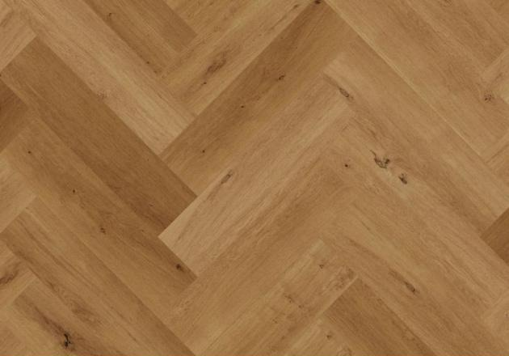
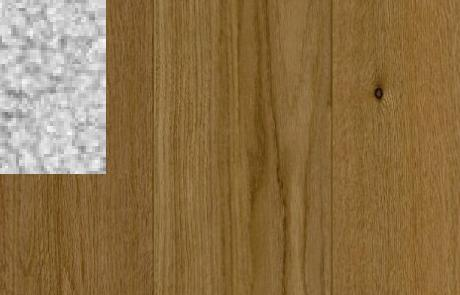
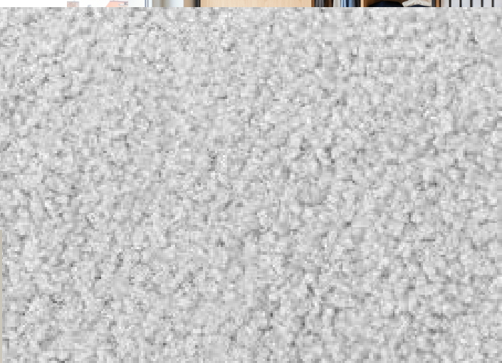
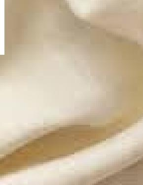
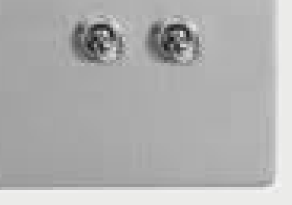
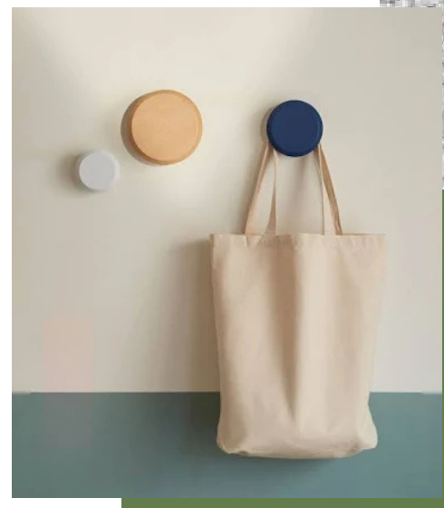